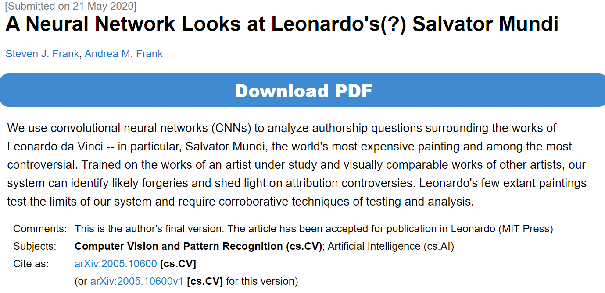

1.
告别伊豆时，那位“我”的脑中真的如一泓清泉流出吗，不再有舞女的身姿吗？
霍乱时期的那张黄旗，会在内河里一直飘扬吗？
回看了下豆瓣已读的书单，谈情说爱的书原来早先读过不少，诸如阿兰德波顿的《爱情笔记》、《在爱情与欲望之间》，又或是《爱的艺术》、《非暴力沟通》等等。内容却都左耳进右耳出，脑中逡巡的日子不过阅读前后一两周罢了。启迪或许是有的，多少曾吸纳了些方法论。更多的，不过是对文中情节发出一时的感慨。绝大内容都已无法回忆，远不如情歌动人持久。
若说恋爱是考试，这些书似乎只用于预习，或是考场速查了，考后也没心思重新翻来检索错题。
所谓纸上得来终觉浅，感情这码事总还是要每人自行去经历、总结，心力憔悴几回，便能摸索个大概。
虽说身边人对情感的渴求愈发旺盛，小览虎扑这种直男社区也可瞅见大伙的浮躁——寻求着快速脱单的技巧。但脱单向来不是心愿的结束，反而是里程的开始。于是乎，看着那些求“术”的人群，总觉得遗憾。
术有其重要性不假，然则修身定性，明晰自身对恋爱的需求与追求更为重要（渣男渣女们大约便只需轻巧的玩弄术式吧）。
情话易说，有点闲钱的人准备几份礼物也不是难事，从始至终担当起责任却是真切的难事。
海誓山盟总是能挑动荷尔蒙的分泌，催眠人的理智。所谓地老天荒等等，煽情处用用也罢，常挂嘴边便只是花言巧语。
我想，立身于现实，刨去对小说影视等内容的幻想，恋人间最真切的盼望和承诺，大约还是“共同成为更好的人”吧——务实，又兼具在时间轴上彼此相伴前行的浪漫。
对了，也当锻造更完整的自我，不谈风月，风月自在。
2.
Salvator Mundi，《救世主》，专家们鉴定为达芬奇的画作，被深度学习模型 [1] 质疑并非真迹。
历经千朝百代，尚能被公众所见的艺术品总有些坎坷身世，乃至离奇故事。《富春山居图》如是，达芬奇“所作”的《救世主》亦如是。
只是，这副画作的奇闻轶事，远超我所设想。
起笔初衷，不过是想感叹深度学习的跨界——竟一步踏入画作鉴定的领域。不曾想，查阅资料后，反倒震撼于画作的传奇故事。

还是回到闲谈的起点吧——深度学习模型本就似黑箱，建模者都不能详尽阐明其背后机制，怎就能用以鉴定画作了？
捣腾深度学习模型的日子，对其态度总有几分割裂。一方面，自己所作成果多似“人工智障”，所学亦让我知晓其能力上界，离强人工智能的时代相去甚远，因而总觉大众对其抱有过高的期望，舆论里泡沫喧嚣太多；另一方面，又不时惊讶于各种AI奇思妙想般的应用，从未想过那些基础的模型可以被迁移魔改至各式奇妙的场景。
粗略阅读这论文，与其说是正儿八经的的学术研究，不如说是研习CNN(卷积神经网络)后学以致用的精巧游戏。称其“精巧”，是佩服于其巧妙的任务定义、模型设计、实验论证，再配上篇似模似样的论文，可以说当个本硕的毕业论文都有余；说其“游戏”，是因为单靠CNN与若干画作样例输入便给出画作真假的判定，更像是一本正经的自说自话——论文里也说了，这判别模型不过是“methodologically sound model”。
不过，这亦引出一有趣话题：人类的智能，是否可交由机器判定？或许这是图灵测试的高阶问题。图灵测试[6]目的仅在测试机器能否表现出与人等价或无法区分的智能，而由机器判定人的智能，或许意味着机器已拥有了人类智能的超集。
小处着眼，现今似乎已有为作文等展示人类创造力成果打分的产品。只不过它们大多基于固定的踩分点等，离真正如人般有理有据衡量他人创作成果差十万八千里。遥望未来，若是人类智能被机器判定，大约意味着统治关系的颠倒，人被奴役于机器也说不定——如《沙丘》中曾经的圣战、《黑客帝国》中虚幻的世界。
人工智能研究的那么一丝丝趣味，在于不想调参炼丹或啃论文时，有个切口能去思索人类的价值与意义，胡思乱想下那遥远的肉身不能抵达的未来。
总觉得艺术是人类对自身的反思及对外交互后的产物，是难以编码的混沌信息，且作品定型时不过只完成了一半，彻底的完成则有赖于作品与观众的交互。
还是再瞧多一眼实验结果吧，广义来讲，这何尝不是结合AI后对作品的再创作。
艺术，在大众参与中丰富而多姿。连这篇随笔，都在互联网光年外的小角落里，为其创作填上了一点点故事。
Reference:
[1] A Neural Network Looks at Leonardo's(?) Salvator Mundi.
[2] https://www.bbc.com/culture/article/20210819-where-is-the-worlds-most-expensive-painting
[3] http://art.ifeng.com/2019/0110/3463608.shtml
[4] https://new.qq.com/omn/20210528/20210528A0CD7H00.html
[5] https://cn.thevalue.com/articles/stolen-salvator-mundi-500-year-old-copy-recovered-in-naples
[6] Turing A M. Computing machinery and intelligence[M]//Parsing the turing test. Springer, Dordrecht, 2009: 23-65.